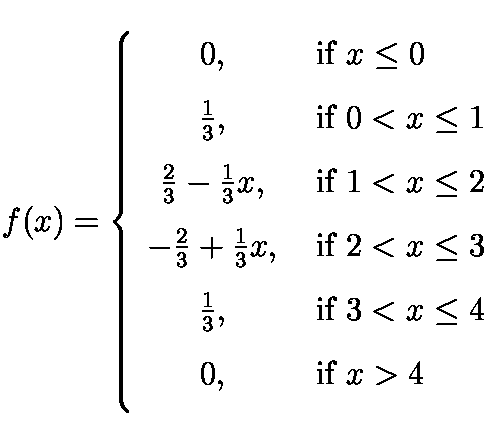

Stat 2000, Section 001, Extra Credit (Due 4/26/2000 in class)
Each of the following questions is worth up to 20 points.
The policy for extra credit is that final grades will be determined
without looking at the extra credit points and cutoff point limits
will be set. Only thereafter, extra credits will be added. Therefore,
people that feel comfortable that they will be able to achieve the
grade they are looking for through regular course work do not
have to work on these extra credit questions. However, if you
feel uncertain about the outcome of your final grade, you may want to work
on one or multiple of these questions.
Please start each question on a new sheet. Extra credit will be
awarded based on completeness and correctness of your answers.
- 1) We have seen several plots (e.g., the Weider empire)
so far that provide only very little of the information one
would like to have about the underlying topic. Can you
find similar plots in newspapers, magazines, on the Web, or even in
your textbooks? If so, then state questions you would like to have answered
about the provided data but no such answers have been given in the
plot, the accompanying caption or the main text where the plot
is coming from. Indicate where the plot has been found
and turn in a photocopy (or printout) of this plot and the
accompanying text.
- 2) Statistical summaries at the federal (US) level show that Utah
usually is ranked first in categories such as average number
of children per married couple and
ranked last in categories such as deaths due to lung cancer,
drunk driving accidents, STD's, HIV, etc. A simple explanation for
Utah's position in these rankings is the specific religious mix
of Utah's population.
- a) Find any statistical data set on the Web that shows Utah's unique
ranking (compared to other US states) that may be explained by the
religious mix of its population. Indicate the source (i.e., URL)
and provide a hardcopy of the data set.
- b) Find a source on the Web that lists the percentage of different
religions for each of the 50 states. Indicate the source (i.e., URL)
and provide a hardcopy of this data set.
Is Utah's mix of religions unique for the US?
Does any other state show a similar mix?
- c) For the data set you found in a), determine some of its
characteristics, i.e., its mean, variance, etc. Assess graphically
and numerically whether the data is approximately Normal
distributed. Use a statistical software package (e.g., Excel or
Statlets) to answer part c).
- d) Using your result from c), indicate whether the data value
for Utah (from the data set you used in a) and c)) is significantly
different from the data values for all other states. Explain all your
steps that lead to your answer. It might be helpful to read
Sections 6.2 and 7.1 in Moore/McCabe to answer part d).
- 3) Statistical data often is controversial. One such example
is the wine consumption/heart attack data from Exercise 2.5
in Moore/McCabe.
In addition to parts a) through c) from the book, answer the
following questions:
- d) Calculate the least squares regression line and the
correlation coefficient r.
- e) If you were a doctor, would you recommend to
your patients to drink some wine? Answer this question
only from the statistical point of view, using the results
from a) through d) above.
- f) At this stage in Stat 2000, we all should be a bit
suspicious about the results we get from a) through d) and
the conclusion drawn in e). Isn't there a way how we might
even strengthen the hypothesis that wine consumption
reduces heart attacks? List at least two countries that
might be possible candidates to strengthen the hypothesis
and indicate why you think these countries might be
possible candidates..
The following Web site might be of some help:
http://intowine.com/
- g) Now that we found two candidate countries that might
support the hypothesis, which additional information
do we need for these countries?
- h) If we want to weaken the hypothesis that wine consumption
reduces heart attacks, which criteria must a country fulfill
such that it weakens the hypothesis? There are two different
scenarios how this can happen.
- i) Now you have to do some speculation - list two countries
for which you would like to get additional information such
that these countries weaken the hypothesis. Explain why you
speculated that these two countries might be possible candidates.
- j) Can you find recent data on wine consumption and heart attacks
for those countries listed in Moore/McCabe and the countries you
listed in g) and i)? Indicate the URLs where this data is located
and include a printout of the data for our countries.
- k) Also read about the "French Paradox" at
http://www.intowine.com/health.html
and
http://intowine.com/healthap.html.
If you were a doctor, would you now recommend to
your patients to drink some wine? Answer this question
only from the statistical point of view, now using the results
from a) through j) above.
- l) If you were a doctor and recommended to
your patients to drink some wine
from the statistical point of view, you are done now.
If you did not make the recommendation to drink some
wine, you still have to explain to your patients
that know about the original study that wine drinking
does not cause a lower heart disease death rate
but instead, that wine drinking is associated
with some other factors that may cause
a lower heart disease death rate. Which are these
other factors? And how are they associated
to wine drinking?
- 4) This question is similar to Assignment 10, Exercise 3.
All parts of this question are based on the following
probability density function (pdf):

- a) Sketch a graph of f(x).
- b) Verify that f(x) is a pdf.
- c) Calculate the cumulative distribution function (cdf) F(x).
- d) Sketch a graph of F(x). Recalling the rules for a cdf, this part d)
will allow you to check your result of part c).
- e) Indicate P(X < 0.5), P(X < 1.8), P(X < 2.9), and P(X < 3.5).
- 5) There will be a fifth question posted in about 10 days
(with a later due date)
that contains exercises from Moore/McCabe on material that
will be discussed in class during the last week,
but won't be part of the last regular
Assignment 13.